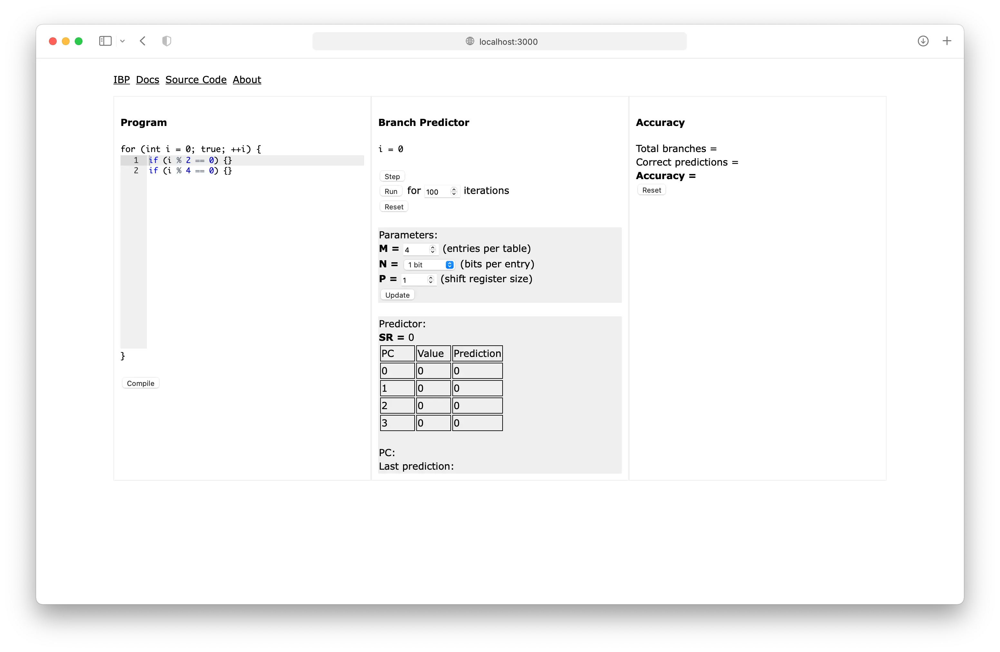

IBP is the
Interactive Branch Predictor. It simulates a
global history correlating branch predictor
that consists of multiple prediction tables indexed by a shift register
that tracks branch history. The branch prediction mechanism is described
in more detail
here; this
document is an overview of the IBP interface.
Interface

The IBP interface consists of the Program View,
Branch Predictor View and
Accuracy View.
Program syntax and semantics are described in the
Program Language section below. The
Program View displays editable program text and highlights the next
statement to be executed. The "Compile" button checks the validity of
the program and enables execution.
The Branch Predictor View displays the current iteration and the state
of the branch predictor.
-
The "Step" button executes a statement and advances to the next
statement or iteration.
- The "Run" button runs the specified number of iterations.
-
The "Reset" button resets the current iteration and the state of the
branch predictor.
-
The "Update" button changes the parameters of the predictor as
specified and resets its state.
The Predictor View displays the current predictor table as selected by
the shift register and highlights the corresponding table entry if the
next statement is a conditional branch (if), as well as the current PC
and the result of the last prediction. The PC of each statement is its
line number displayed in the editor.
The Accuracy view displays the accuracy of the branch predictor. The
"Reset" button resets the accuracy and the count of
branches/predictions.
Program Language
The IBP Program Language is syntactically and semantically very similar
to C:
let a = 1;
if (a < 2) {
let b = rand(12);
let c = b << 2;
if (c > b) {}
}
A single program is a list of statements. Statements can be of two
forms:
-
let <identifier> = <expression>;
"Let" statements bind the identifier to the result of the expression
within the current scope. Identifiers must begin with an alphabet or
underscore and be followed by zero or more alphabets, underscores or
digits.
-
if (<expression>) { [<statement>] }
"If" statements are the branches that are predicted. As in C,
conditional expressions that evaluate to zero are treated as false
and non-zero values are treated as true. The branch is considered
taken when the condition is true and is
not taken when the condition is false. The
statements in the "body" of the if statement execute within a new
scope that inherits the variables defined in its parent scope.
Expressions can be one of:
-
Number literals: These are decimal integer
literals, or hexadecimal, octal or binary integer literals prefixed
with
0x, 0o and
0b respectively.
-
Variables: These are identifiers that are bound to
a value in the current scope or a parent scope. The variable
i is defined implicitly and is the loop counter.
-
Unary or binary operations: These operate on one or
two expressions respectively. The IBP Program Language has the same
set of operators as
C and C++
with the same precedence, with the exception of the ternary
(
?:), assignment (+=, -=, *= etc.) and
increment/decrement (++, --) operators.
-
Random numbers: The built-in
rand(n) "function" produces a random integer between
zero and n (inclusive) where n is any
expression.
Notably, every expression evaluates to a number. This
is a JavaScript number and not an integer, which means division is not
floored: 1 / 2 is 0.5 and not 0.